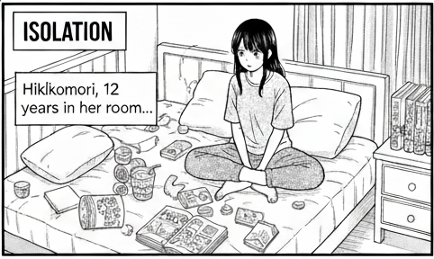
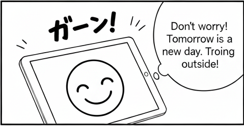
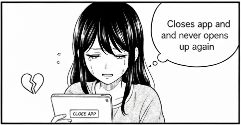
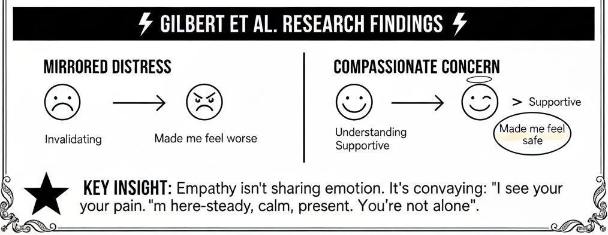

The Empathy Paradox
Yui's Story





Authentic Empathy Requires Four Coordinated Modalities

The Architecture
Six Services, 60 FPS Synchronization


WittyHead + Digital MOAI
Real-World Application

Keyboard Shortcuts
- → Space Next slide
- ← Previous slide
- Home First slide
- End Last slide
- N Toggle speaker notes
- F Toggle fullscreen
- R Reset timer
- ? H Toggle help